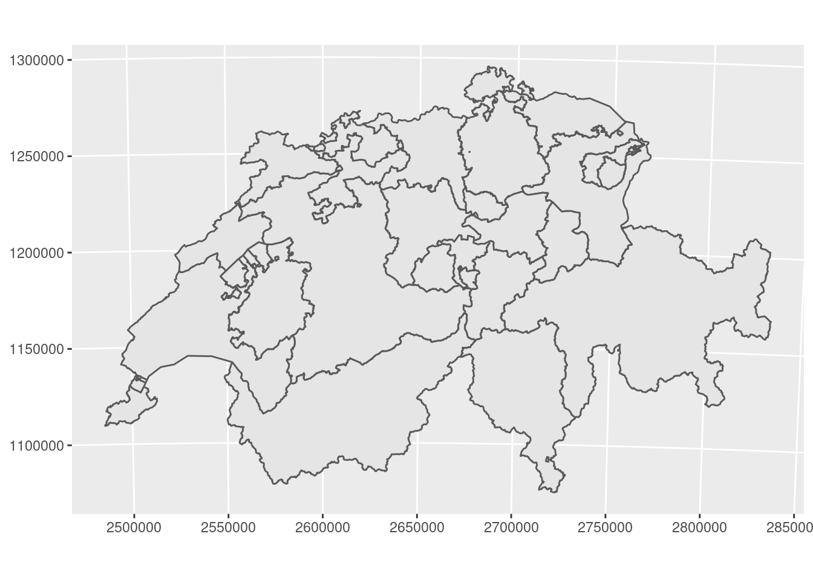
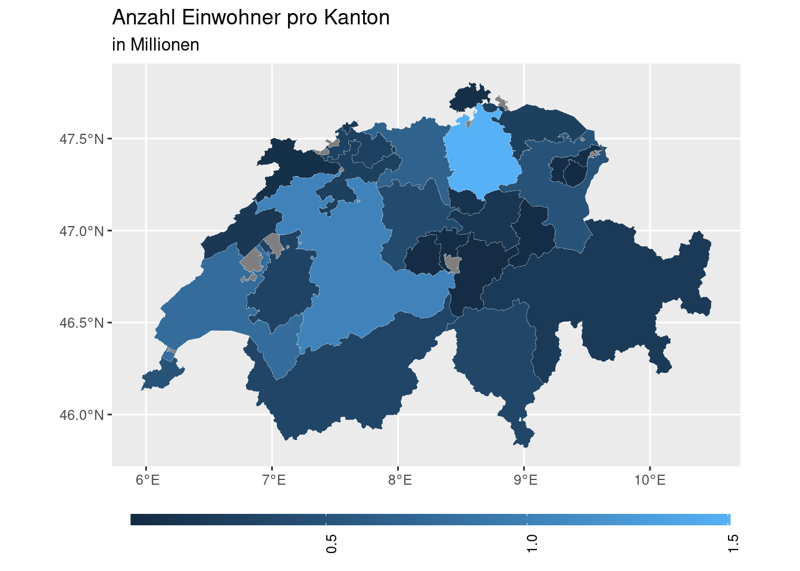
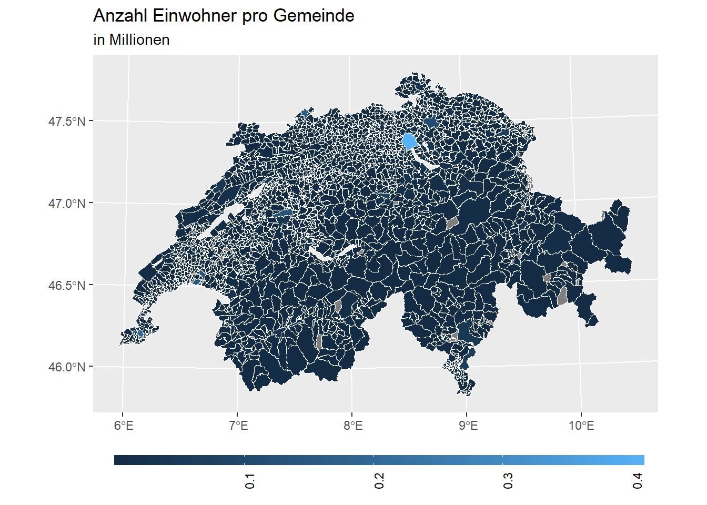

Rauman 1: Übung A
Es gibt bereits eine Vielzahl von Packages um in R mit räumlichen Daten zu arbeiten, die ihrerseits wiederum auf weiteren Packages basieren (Stichwort dependencies). Für Vektordaten dominierte lange das Package sp, welches nun durch sf abgelöst wurde. Wir werden wenn immer möglich mit sf arbeiten und nur in Ausnahmefällen auf andere Packages zurück greifen.
Für die kommenden Übungen könnt ihr folgende Packages installieren bzw. laden:
library(sf)
library(dplyr)
library(ggplot2)Aufgabe 1: Vektor Daten runterladen und importieren
Lade zunächst die Datensätze unter folgenden Links herunter:
Es handelt sich um Geodatensätze im Format Geopackage (“*.gpkg”), eine alternatives Datenformat zum bekannteren Format “Shapefiles”. Importiere die Datensätze wie folgt:
kantone <- read_sf(here("data","kantone.gpkg"))
gemeinden <- read_sf(here("data","gemeinden.gpkg")) Schau Dir die importierten Datensätze an. Am meisten Informationen zu sf Objekten bekommst du, wenn du dir den Datensatz in der Konsole anschaust (in dem du den Variabel-Name in der Konsole eintippst). Mit dem RStudio Viewer werden sf Objekte nur sehr langsam geladen und die Metadaten werden nicht angezeigt.
Aufgabe 2: Daten Visualisieren
Vektordaten (sf Objekte) lassen sich teilweise sehr schön in die bekannten Tidyverse workflows integrieren. Das merkt man schnell, wenn man die Daten visualisieren möchte. In InfoVis 1 & 2 haben wir intensiv mit ggplot2 gearbeitet und dort die Layers geom_point() und geom_line() kennen gelernt. Zusätzlich beinhaltet ggplot die Möglichkeit, mit geom_sf() Vektordaten direkt und sehr einfach zu plotten. Führe die angegebenen R-Befehle aus und studiere die entstehenden Plots. Welche Unterschiede findest Du? Wie erklärst Du diese Unterschiede?
ggplot(gemeinden) +
geom_sf()Warning in CPL_transform(x, crs, aoi, pipeline,
reverse, desired_accuracy, : GDAL Error 6: Cannot find
coordinate operations from `ENGCRS["Undefined Cartesian
SRS",EDATUM[""],CS[Cartesian,2],AXIS["(E)",east,ORDER[1],LENGTHUNIT["Meter",1]],AXIS["(N)",north,ORDER[2],LENGTHUNIT["Meter",1]]]'
to `ENGCRS["Undefined Cartesian
SRS",EDATUM[""],CS[Cartesian,2],AXIS["(E)",east,ORDER[1],LENGTHUNIT["Meter",1]],AXIS["(N)",north,ORDER[2],LENGTHUNIT["Meter",1]]]'Error in CPL_transform(x, crs, aoi, pipeline, reverse, desired_accuracy, : OGRCreateCoordinateTransformation(): transformation not availableggplot(kantone) +
geom_sf()Warning in CPL_transform(x, crs, aoi, pipeline,
reverse, desired_accuracy, : GDAL Error 6: Cannot find
coordinate operations from `ENGCRS["Undefined Cartesian
SRS",EDATUM[""],CS[Cartesian,2],AXIS["(E)",east,ORDER[1],LENGTHUNIT["Meter",1]],AXIS["(N)",north,ORDER[2],LENGTHUNIT["Meter",1]]]'
to `ENGCRS["Undefined Cartesian
SRS",EDATUM[""],CS[Cartesian,2],AXIS["(E)",east,ORDER[1],LENGTHUNIT["Meter",1]],AXIS["(N)",north,ORDER[2],LENGTHUNIT["Meter",1]]]'Error in CPL_transform(x, crs, aoi, pipeline, reverse, desired_accuracy, : OGRCreateCoordinateTransformation(): transformation not availableInput: Koodinatensysteme
In der obigen visualierung fällt folgendes auf:
- die X/Y Achsen weisen zwei ganz unterschiedlichen Zahlenbereiche auf (vergleiche die Achsenbeschriftungen)
- der Umriss der Schweiz sieht in den beiden Datensätzen unterschiedlich aus (
kantoneist gegenübergemeindengestaucht)
Dies hat natürlich damit zu tun, dass die beiden Datensätze in unterschiedlichen Koordinatensystemen erfasst wurden. Koordinatensysteme werden mit CRS (Coordinate Reference System) abgekürzt. Mit st_crs() können die zugewiesenen Koordinatensysteme abgefragt werden.
st_crs(kantone)Coordinate Reference System:
User input: Undefined Cartesian SRS
wkt:
ENGCRS["Undefined Cartesian SRS",
EDATUM[""],
CS[Cartesian,2],
AXIS["(E)",east,
ORDER[1],
LENGTHUNIT["Meter",1]],
AXIS["(N)",north,
ORDER[2],
LENGTHUNIT["Meter",1]]]st_crs(gemeinden)Coordinate Reference System:
User input: Undefined Cartesian SRS
wkt:
ENGCRS["Undefined Cartesian SRS",
EDATUM[""],
CS[Cartesian,2],
AXIS["(E)",east,
ORDER[1],
LENGTHUNIT["Meter",1]],
AXIS["(N)",north,
ORDER[2],
LENGTHUNIT["Meter",1]]]Leider sind in unserem Fall keine Koordinatensysteme zugewiesen. Mit etwas Erfahrung kann man das Koordinatensystem aber erraten, so viele kommen nämlich gar nicht in Frage. Am häufigsten trifft man hierzulande eines der drei folgenden Koordinatensysteme an:
- CH1903 LV03: das alte Koordinatensystem der Schweiz
- CH1903+ LV95: das neue Koordinatensystem der Schweiz
- WGS84: ein häufig genutztes weltumspannendes geodätisches Koordinatensystem, sprich die Koordinaten werden in Länge und Breite angegeben (Lat/Lon).
Nun gilt es, anhand der Koordinaten die in der Spalte geometry ersichtlich sind das korrekte Koordinatensystem festzustellen. Wenn man sich auf epsg.io/map die Schweiz anschaut, kann man die Koordinaten in verschiedenen Koordinatensystem betrachten.
Bedienungshinweise:
Wenn man diese Koordinaten mit den Koordinaten unserer Datensätze vergleicht, dann ist schnell klar, dass es sich beim Datensatz kantone um das Koordinatensystem WGS84 handelt und bei gemeinden das Koordinatensystem CH1903+ LV95. Diese Koordinatensyteme weisen wir nun mit st_set_crs() und dem entsprechenden EPSG-Code (siehe die jeweiligen Links) zu.
kantone <- st_set_crs(kantone, 4326)
gemeinden <- st_set_crs(gemeinden, 2056)
# zuweisen mit st_set_crs(), abfragen mit st_crs()
st_crs(kantone)Coordinate Reference System:
User input: EPSG:4326
wkt:
GEOGCRS["WGS 84",
DATUM["World Geodetic System 1984",
ELLIPSOID["WGS 84",6378137,298.257223563,
LENGTHUNIT["metre",1]]],
PRIMEM["Greenwich",0,
ANGLEUNIT["degree",0.0174532925199433]],
CS[ellipsoidal,2],
AXIS["geodetic latitude (Lat)",north,
ORDER[1],
ANGLEUNIT["degree",0.0174532925199433]],
AXIS["geodetic longitude (Lon)",east,
ORDER[2],
ANGLEUNIT["degree",0.0174532925199433]],
USAGE[
SCOPE["Horizontal component of 3D system."],
AREA["World."],
BBOX[-90,-180,90,180]],
ID["EPSG",4326]]Auch wenn das CRS der Datensätze bekannt ist, nutzt ggplot immer noch EPSG 4326 um die Achsen zu beschriften. Wenn das stört, kann man coord_sf(datum = 2056) in einem weiteren Layer spezifizieren. Oder aber man blendet die Achsenbeschriftung mit theme_void() komplett aus. Versuche beide Varianten.
ggplot() +
geom_sf(data = kantone) +
coord_sf(datum = 2056)
Aufgabe 3: Koordinatensyteme transformieren
In der vorherigen Übung haben wir das bestehende Koordinatensystem zugewiesen. Dabei haben wir die bestehenden Koordinaten (in der Spalte geom) nicht manipuliert. Ganz anders ist eine Transformation der Daten von einem Koordinatensystem in das andere. Bei einer Transformation werden die Koordinaten in das neue Koordinatensystem umgerechnet und somit manipuliert. Aus praktischen Gründen wollen wir all unsere Daten ins neue Schweizer Koordinatensystem CH1903+ LV95 transfomieren. Transformiere den Datensatz kantone mit st_transform()in CH1903+ LV95, nutze dafür den korrekten EPSG-Code.
Vor der Transformation (betrachte die Attribute Bounding box sowie Geodetic CRS):
kantoneSimple feature collection with 51 features and 6 fields
Geometry type: POLYGON
Dimension: XY
Bounding box: xmin: 5.955902 ymin: 45.81796 xmax: 10.49217 ymax: 47.80845
Geodetic CRS: WGS 84
# A tibble: 51 × 7
NAME KANTON…¹ SEE_F…² KANTO…³ KT_TEIL EINWO…⁴ geom
* <chr> <int> <dbl> <dbl> <chr> <int> <POLYGON [°]>
1 Graubünden 18 NA 710530 0 197888 ((8.877053 46.81291, 8.8…
2 Bern 2 11897 595952 1 1031126 ((7.153522 46.98628, 7.1…
3 Valais 23 1060 522463 0 341463 ((8.477625 46.52762, 8.4…
4 Vaud 22 39097 321201 1 793129 ((6.779825 46.85296, 6.7…
5 Ticino 21 7147 281216 0 353709 ((8.477625 46.52762, 8.4…
6 St. Gallen 17 7720 202820 1 504686 ((8.808609 47.22009, 8.7…
7 Zürich 1 6811 172894 0 1504346 ((8.410084 47.24837, 8.4…
8 Fribourg 10 7818 167142 1 315074 ((7.040344 46.97952, 7.0…
9 Luzern 3 6438 149352 0 406506 ((8.468167 46.99652, 8.4…
10 Aargau 19 870 140380 1 670988 ((8.410084 47.24837, 8.4…
# … with 41 more rows, and abbreviated variable names ¹KANTONSNUM, ²SEE_FLAECH,
# ³KANTONSFLA, ⁴EINWOHNERZkantone <- st_transform(kantone, 2056)Nach der Transformation (betrachte die Attribute Bounding box sowie Projected CRS):
kantoneSimple feature collection with 51 features and 6 fields
Geometry type: POLYGON
Dimension: XY
Bounding box: xmin: 5.955902 ymin: 45.81796 xmax: 10.49217 ymax: 47.80845
Geodetic CRS: WGS 84
# A tibble: 51 × 7
NAME KANTON…¹ SEE_F…² KANTO…³ KT_TEIL EINWO…⁴ geom
* <chr> <int> <dbl> <dbl> <chr> <int> <POLYGON [°]>
1 Graubünden 18 NA 710530 0 197888 ((8.877053 46.81291, 8.8…
2 Bern 2 11897 595952 1 1031126 ((7.153522 46.98628, 7.1…
3 Valais 23 1060 522463 0 341463 ((8.477625 46.52762, 8.4…
4 Vaud 22 39097 321201 1 793129 ((6.779825 46.85296, 6.7…
5 Ticino 21 7147 281216 0 353709 ((8.477625 46.52762, 8.4…
6 St. Gallen 17 7720 202820 1 504686 ((8.808609 47.22009, 8.7…
7 Zürich 1 6811 172894 0 1504346 ((8.410084 47.24837, 8.4…
8 Fribourg 10 7818 167142 1 315074 ((7.040344 46.97952, 7.0…
9 Luzern 3 6438 149352 0 406506 ((8.468167 46.99652, 8.4…
10 Aargau 19 870 140380 1 670988 ((8.410084 47.24837, 8.4…
# … with 41 more rows, and abbreviated variable names ¹KANTONSNUM, ²SEE_FLAECH,
# ³KANTONSFLA, ⁴EINWOHNERZAufgabe 4: Chloroplethen Karte
Nun wollen wir die Gemeinden respektive die Kantone nach ihrer Einwohnerzahl einfärben. Dafür verwenden wir wie gewohnt die Methode aes(fill = ...) von ggplot.
Tips:
- um die scientific notation (z.B.
3e+03) zu verhindern, könnt ihr den Befehloptions(scipen = 999)ausführen - um die Darstellung der Gemeinde- (bzw. Kantons-) Grenzen zu verhindern, könnt ihr im entsprechenden Layer
color = NAsetzen. Alternativ könnt ihr die Linienbreite mitsize =verändern.
ggplot(kantone, aes(fill = EINWOHNERZ/1e6)) +
geom_sf(color= "white",size = .05) +
labs(title = "Anzahl Einwohner pro Kanton",
subtitle = "in Millionen") +
theme(legend.position = "bottom",
legend.title = element_blank(),
legend.key.width = unit(0.15, 'npc'),
legend.key.height = unit(0.02, 'npc'),
legend.text = element_text(angle = 90,hjust = 0.5),
legend.text.align = 1)
ggplot(gemeinden,aes(fill = EINWOHNERZ/1e6)) +
geom_sf(color= "white",size = .05) +
scale_fill_continuous("Einwohner (in Mio)") +
labs(title = "Anzahl Einwohner pro Gemeinde",
subtitle = "in Millionen") +
theme(legend.position = "bottom",
legend.title = element_blank(),
legend.key.width = unit(0.15, 'npc'),
legend.key.height = unit(0.02, 'npc'),
legend.text = element_text(angle = 90,hjust = 0.5),
legend.text.align = 1)
